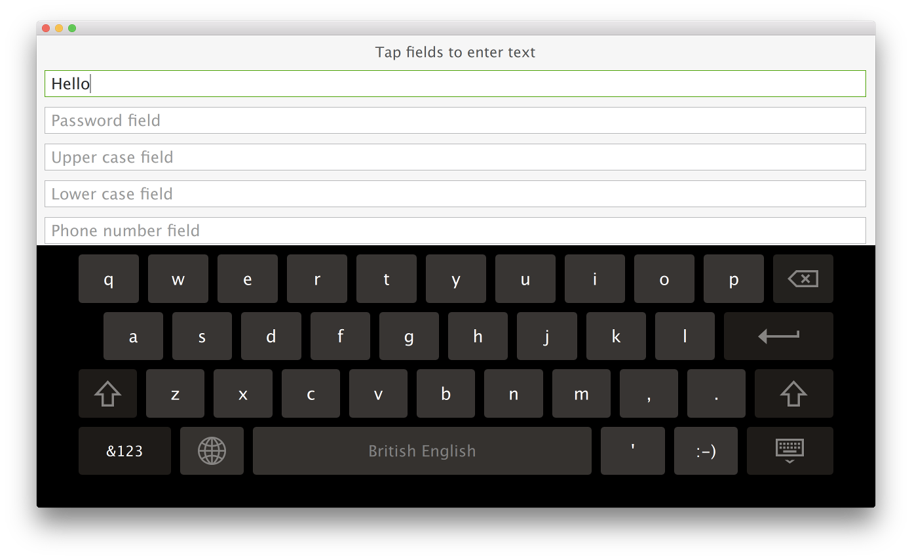

Qt Quick Virtual Keyboard - Basic Example
This is a basic QML example that uses the virtual keyboard.

The example has two implementations: one for desktop platforms and another for embedded platforms. The former version enables text input into several text fields using the virtual keyboard, whereas the latter version uses the same UI but with a custom virtual keyboard InputPanel. The following snippet from basic.pro shows how the qmake project is set up to choose the appropriate implementation based on the CONFIG options:
disable-desktop|android-embedded|!isEmpty(CROSS_COMPILE)|qnx {
DEFINES += MAIN_QML=\\\"basic-b2qt.qml\\\"
} else {
DEFINES += MAIN_QML=\\\"Basic.qml\\\"
}
The example enables the virtual keyboard by setting the QT_IM_MODULE environment variable before loading the .qml file:
#include <QQuickView> #include <QGuiApplication> #include <QQmlEngine> int main(int argc, char *argv[]) { qputenv("QT_IM_MODULE", QByteArray("qtvirtualkeyboard")); QGuiApplication app(argc, argv); QQuickView view(QString("qrc:/%2").arg(MAIN_QML)); if (view.status() == QQuickView::Error) return -1; view.setResizeMode(QQuickView::SizeRootObjectToView); view.show(); return app.exec(); }
Besides this, it uses custom TextField and TextArea items to configure the [ENTER] key behavior using the EnterKeyAction attached property.
import QtQuick 2.10 import QtQuick.Controls 2.3 import QtQuick.VirtualKeyboard 2.1 import "content" Rectangle { ... TextField { width: parent.width placeholderText: "One line field" enterKeyAction: EnterKeyAction.Next onAccepted: passwordField.focus = true } ... TextArea { id: textArea width: parent.width placeholderText: "Multiple line field" height: Math.max(206, implicitHeight) } }
The TextField and TextArea controls extend the respective Qt Quick Controls 2 types with enterKeyEnabled and enterKeyAction properties. The TextField and TextArea instances in the snippet can set these properties to change the default behavior.
Running the Example
To run the example from Qt Creator, open the Welcome mode and select the example from Examples. For more information, visit Building and Running an Example.